CRVI000125Yusaku Kamekura - Expo '70
Japan World Exposition, Osaka · 'Progress and Harmony for Mankind' · 1970
Japan World Exposition, Osaka · 'Progress and Harmony for Mankind' · 1970

CRVI000452Derek Birdsall - Reconstructing Social Psychology
Cover for Nigel Armistead · Penguin Education · 1972
Cover for Nigel Armistead · Penguin Education · 1972

CRVI000164Colosseum II - Electric Savage
Designed by John Pasche · MCA MCF2800 · 1977
Designed by John Pasche · MCA MCF2800 · 1977

CRVI000355Isaac Hayes - ...To Be Continued
Designer unknown · Enterprise · 1970
Designer unknown · Enterprise · 1970
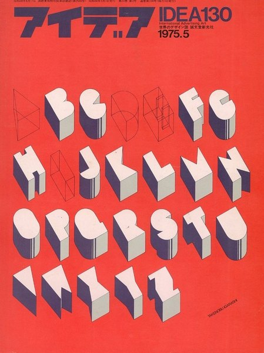
CRVI001056Takenobu Igarashi - Cover for IDEA No. 130
Magazine cover · Seibundo Shinkosha, Tokyo · 1975
Magazine cover · Seibundo Shinkosha, Tokyo · 1975

CRVI000266Roman Cieślewicz - J.M.K. Hellcat
Theatre Poster · 1979 · 1979
Theatre Poster · 1979 · 1979

CRVI000353Betty Davis - Betty Davis
Designer unknown · Just Sunshine · 1973
Designer unknown · Just Sunshine · 1973

CRVI000862Julian Stanczak - Sequential Chroma
Screen print on paper · 76.8 × 65.4 cm · 1978
Screen print on paper · 76.8 × 65.4 cm · 1978

CRVI000303Suicide - Suicide
Designer unknown · Red Star · 1977
Designer unknown · Red Star · 1977

CRVI000444David Pelham - The Drought
Cover for J. G. Ballard · Penguin Science Fiction · 1974
Cover for J. G. Ballard · Penguin Science Fiction · 1974

CRVI000263Roman Cieślewicz - Polish Fashion
Advertising Poster · 1972 · 1972
Advertising Poster · 1972 · 1972

CRVI000599Unknown - 1977: It All Happened Here. Where Else?
New York, December 26, 1977 · 1977
New York, December 26, 1977 · 1977

CRVI000333100 Proof (Aged In Soul) - 100 Proof Aged In Soul
Designer unknown · Hot Wax · 1972
Designer unknown · Hot Wax · 1972

CRVI000600Unknown - When Was the Last Time You Called Your Mother?
New York, May 7, 1979 · 1979
New York, May 7, 1979 · 1979

CRVI000601Unknown - Replacing the Irreplaceable
New York, October 22, 1979 · 1979
New York, October 22, 1979 · 1979

CRVI000257Lech Majewski - Thank God It's Friday
Film Poster Designed By Lech Majewski · 1979 · 1979
Film Poster Designed By Lech Majewski · 1979 · 1979

CRVI000082Klaus Weiss - Time Signals
Designer unknown · Selected Sound · 1978
Designer unknown · Selected Sound · 1978

CRVI001042Kiyoshi Awazu - Poster Nippon
Screenprint · LACMA, Marc Treib Collection · 1972
Screenprint · LACMA, Marc Treib Collection · 1972

CRVI000032Earle Brown - Music By Earle Brown
Artwork by Judith Lerner · Composers Recordings Inc. · 1974
Artwork by Judith Lerner · Composers Recordings Inc. · 1974

CRVI000120Tadanori Yokoo - Tadanori Yokoo — Stedelijk Museum Amsterdam
Exhibition poster, 22.2 t/m 14.4 1974 · 1974
Exhibition poster, 22.2 t/m 14.4 1974 · 1974

CRVI000358Stevie Wonder - Fulfillingness' First Finale
Designer unknown · Tamla · 1974
Designer unknown · Tamla · 1974

CRVI000141Shin Matsunaga - Shiseido Sun Oil
Offset lithograph · 1971
Offset lithograph · 1971

CRVI000443David Pelham - The Drowned World
Cover for J. G. Ballard · Penguin Science Fiction · 1974
Cover for J. G. Ballard · Penguin Science Fiction · 1974

CRVI000348Eddie Hazel - Game, Dames And Guitar Thangs
Designer unknown · Warner · 1977
Designer unknown · Warner · 1977

CRVI000332100 Proof (Aged In Soul) - Somebody's Been Sleeping in My Bed
Designer unknown · HotWax · 1970
Designer unknown · HotWax · 1970

CRVI000595Unknown - TV vs. the Pols: Who's Using Whom?
New York, June 26, 1972 · 1972
New York, June 26, 1972 · 1972

CRVI000363Billy Paul - 360 Degrees of Billy Paul
Designer unknown · Philadelphia International · 1972
Designer unknown · Philadelphia International · 1972

CRVI000351Parlet - Pleasure Principle
Designer unknown · Casablanca · 1978
Designer unknown · Casablanca · 1978

CRVI000594Unknown - Money Advisor: How to Borrow Money… Cleverly
New York, January 24, 1972 · 1972
New York, January 24, 1972 · 1972

CRVI000591Unknown - Doctor Feelgood, You Make Me Feel So Good. Are You Sure It's All Right?
New York, February 8, 1971 · 1971
New York, February 8, 1971 · 1971

CRVI000364The Miracles - City of Angels
Designer unknown · Tamla · 1975
Designer unknown · Tamla · 1975

CRVI000588Unknown - The Men of Women's Liberation Have Learned Not to Laugh
New York, May 18, 1970 · 1970
New York, May 18, 1970 · 1970

CRVI000361Betty Wright - Hard to Stop
Designer unknown · TK · 1973
Designer unknown · TK · 1973

CRVI000592Unknown - Can Anybody Handle the Soaring Costs of Private Schools?
New York, March 29, 1971 · 1971
New York, March 29, 1971 · 1971

CRVI000312The Human League - Reproduction
Designer unknown · Virgin · 1979
Designer unknown · Virgin · 1979

CRVI000770Paula Scher - Best of Jazz
Lithograph · 91.1 × 68.9 cm · 1979
Lithograph · 91.1 × 68.9 cm · 1979

CRVI000360O.V. WRIGHT - Into Something (Can't Shake Loose)
Designer unknown · Hi · 1977
Designer unknown · Hi · 1977

CRVI000863Julian Stanczak - Sharing in Orange
Acrylic on canvas · 107.3 × 107.3 cm · 1970
Acrylic on canvas · 107.3 × 107.3 cm · 1970

CRVI000385Herman Chin Loy - Aquarius Recording Co
Designer unknown · Ltd. · 1975
Designer unknown · Ltd. · 1975

CRVI000293Jean-Jacques Perrey - Moog Indigo
Designer unknown · Vanguard · 1970
Designer unknown · Vanguard · 1970

CRVI000107Masuteru Aoba - The Bread Is For Peace
戦争に使うパンはない · anti-war poster · carries an Arthur Koestler passage in twelve languages · c1975
戦争に使うパンはない · anti-war poster · carries an Arthur Koestler passage in twelve languages · c1975

CRVI000815Seymour Chwast - E Pluribus Bang!
Viking Press · 1970
Viking Press · 1970

CRVI000349Bernie Worrell - All The Woo In The World
Designer unknown · Arista · 1978
Designer unknown · Arista · 1978

CRVI000328Stevie Wonder - Signed, Sealed & Delivered I'm Yours
Designer unknown · Motown · 1970
Designer unknown · Motown · 1970

CRVI000152Cressida - Asylum
Designed by Keef · Vertigo 6360 025 · 1971
Designed by Keef · Vertigo 6360 025 · 1971

CRVI000111Kiyoshi Awazu - Contemporary Japanese Sculpture Exhibition — Form and Color
現代日本彫刻展 形と色 · 1973
現代日本彫刻展 形と色 · 1973

CRVI000298Snakefinger - Chewing Hides The Sound
Designer unknown · Ralph · 1979
Designer unknown · Ralph · 1979

CRVI000438John McConnell - The Concept of Mind
Cover for Gilbert Ryle · Penguin University Books
Cover for Gilbert Ryle · Penguin University Books

CRVI000596Unknown - Special 16-Page Section for New York Kids
New York, June 25, 1973 · 1973
New York, June 25, 1973 · 1973

CRVI000593Unknown - Some Thoughtful Parents Care Enough About Their Kids' Education to Send Them to Public Schools
New York, November 8, 1971 · 1971
New York, November 8, 1971 · 1971

CRVI000831Seymour Chwast - I, Claudius
Mobil Masterpiece Theatre · 76 × 118 cm · 1976
Mobil Masterpiece Theatre · 76 × 118 cm · 1976

CRVI000017David Chesworth - 50 Synthesizer Greats
Designed by Geronimo Creative Services · 1979
Designed by Geronimo Creative Services · 1979

CRVI000448Derek Birdsall - Socialization
Cover for Kurt Danziger · Penguin Education · 1972
Cover for Kurt Danziger · Penguin Education · 1972

CRVI000130Koichi Sato - New Music Media, New Magic Media
1974
1974

CRVI000145Gentle Giant - Octopus
Designed by Roger Dean · 1972
Designed by Roger Dean · 1972

CRVI000453Derek Birdsall - Culture Against Man
Cover for Jules Henry · Penguin Education · 1972
Cover for Jules Henry · Penguin Education · 1972

CRVI000126Shigeo Fukuda - The World of Shigeo Fukuda in U.S.A.
M.H. de Young Memorial Museum, San Francisco · Junior Art Center, Los Angeles · Santa Barbara Museum of Art · 1971
M.H. de Young Memorial Museum, San Francisco · Junior Art Center, Los Angeles · Santa Barbara Museum of Art · 1971

CRVI000359The Staple Singers - Let's Do It Again (Original Soundtrack)
Designer unknown · Curtom · 1975
Designer unknown · Curtom · 1975
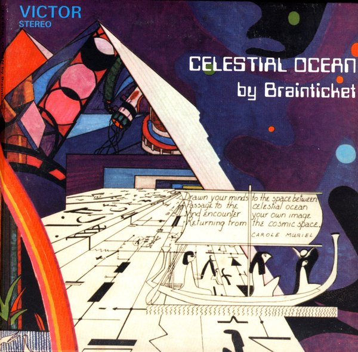
CRVI000383Brainticket - Celestial Ocean
Designer unknown · RCA Victor · 1972
Designer unknown · RCA Victor · 1972

CRVI000097Tonto - It's About Time
Designer unknown · Polydor · 1974
Designer unknown · Polydor · 1974

CRVI000850New West - A Star Is Born
New West Magazine
New West Magazine

CRVI000049Jon Appleton - The World Music Theatre Of Jon Appleton
Designed by Ronald Clyne · 1974
Designed by Ronald Clyne · 1974

CRVI000110Kiyoshi Awazu - The 6th Contemporary Japanese Sculpture Exhibition
第6回現代日本彫刻展 · Ube City Open-Air Sculpture Museum, Tokiwa Park, Ube, Yamaguchi · 1975
第6回現代日本彫刻展 · Ube City Open-Air Sculpture Museum, Tokiwa Park, Ube, Yamaguchi · 1975

CRVI000841Ottagono - Ottagono 18
settembre 1970 · anno 5 · 1970
settembre 1970 · anno 5 · 1970

CRVI000350The Brides of Funkenstein - Funk Or Walk
Designer unknown · Warner · 1978
Designer unknown · Warner · 1978

CRVI000296Miles Davis - On The Corner
Designer unknown · Columbia · 1972
Designer unknown · Columbia · 1972
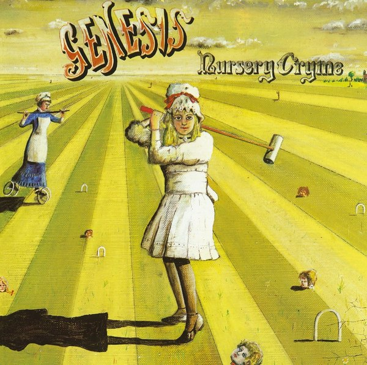
CRVI000179Genesis - Nursery Cryme
Designed by Paul Whitehead · Charisma CAS1052 · 1971
Designed by Paul Whitehead · Charisma CAS1052 · 1971
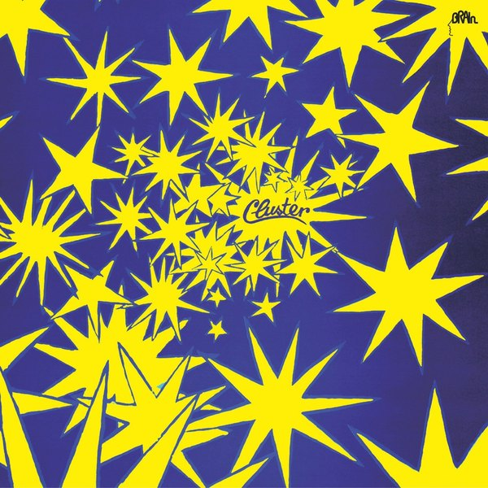
CRVI000069Cluster - Cluster Il
Designer unknown · Brain · 1972
Designer unknown · Brain · 1972
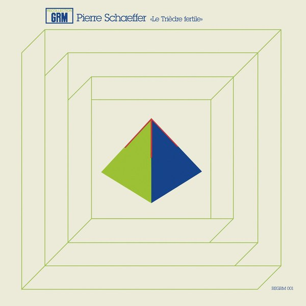
CRVI000053Pierre Schaeffer - Le Trièdre Fertile
Designed by Stephen O'Malley · Philips · 1978
Designed by Stephen O'Malley · Philips · 1978
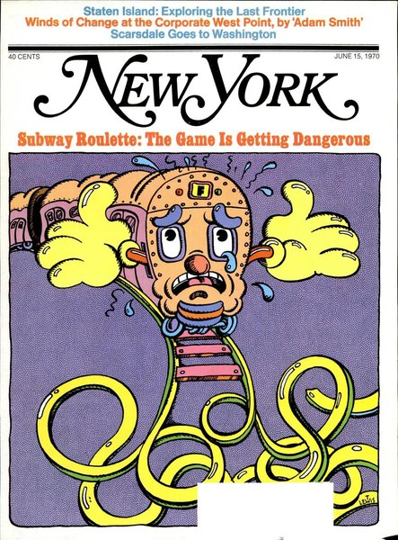
CRVI000589Unknown - Subway Roulette: The Game Is Getting Dangerous
New York, June 15, 1970 · 1970
New York, June 15, 1970 · 1970

CRVI000864Julian Stanczak - Airy
1973 · 1973
1973 · 1973

CRVI000382Joel Vandroogenbroeck - Images Of Flute In Nature
Designer unknown · Cenacolo · 1978
Designer unknown · Cenacolo · 1978

CRVI000265Roman Cieślewicz - Theater Wspolczesny in Wroclaw Invites
Theatre Poster · 1975 · 1975
Theatre Poster · 1975 · 1975

CRVI000510Albert Ayler - The Last Album
Designed by Woody Woodward Grafix · Impulse! · 1971
Designed by Woody Woodward Grafix · Impulse! · 1971

CRVI000341Terry Callier - Occasional Rain
Designer unknown · Coder · 1972
Designer unknown · Coder · 1972

CRVI000393Harold Melvin & The Blue Notes - Wake Up Everybody (feat. Teddy Pendergrass)
Designer unknown · International · 1975
Designer unknown · International · 1975

CRVI000249Bozena Jankowska - Dersu Uzala
Film Poster Designed By Bozena Jankowska · 1976 · 1976
Film Poster Designed By Bozena Jankowska · 1976 · 1976
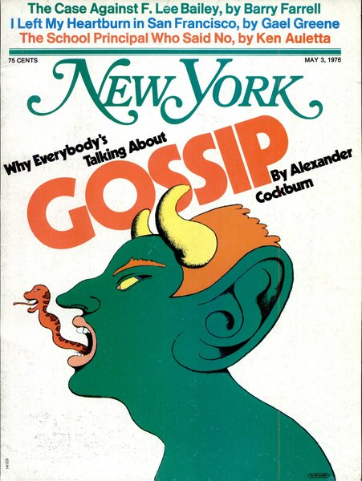
CRVI000597Unknown - Why Everybody's Talking About Gossip
New York, May 3, 1976 · 1976
New York, May 3, 1976 · 1976

CRVI000334Chairmen of the Board - Give Me Just A Little More Time
Designer unknown · Invictus · 1970
Designer unknown · Invictus · 1970
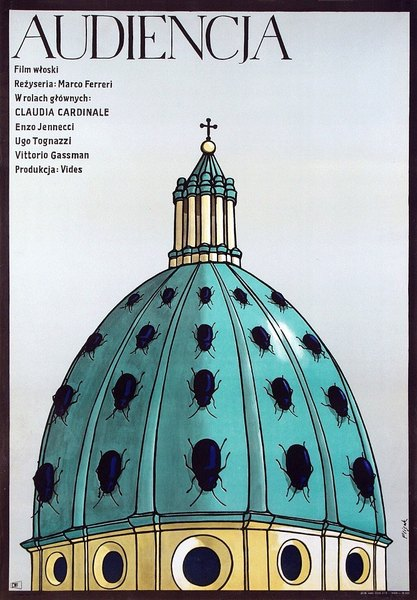
CRVI000254Jerzy Flisak - The Audience
Film Poster Designed By Jerzy Flisak · 1973 · 1973
Film Poster Designed By Jerzy Flisak · 1973 · 1973
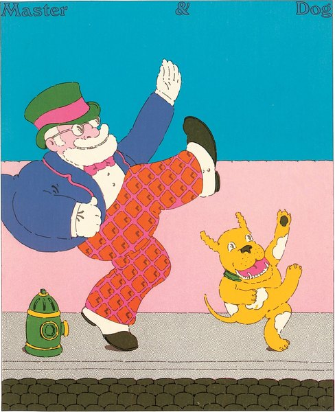
CRVI000824Seymour Chwast - Master & Dog
Push Pin Graphic #57 · 1972
Push Pin Graphic #57 · 1972

CRVI000295Parliament - Mothership Connection
Designer unknown · Casablanca · 1975
Designer unknown · Casablanca · 1975

CRVI000347Funkadelic - Standing On The Verge Of Getting It On
Designer unknown · Westbound · 1974
Designer unknown · Westbound · 1974

CRVI000352Earth, Wind & Fire - AIl 'N' AIl
Designer unknown · Columbia · 1977
Designer unknown · Columbia · 1977

CRVI000748Olaf Stapledon - Sirius
Designed by David Pelham · Penguin Science Fiction · 1972
Designed by David Pelham · Penguin Science Fiction · 1972
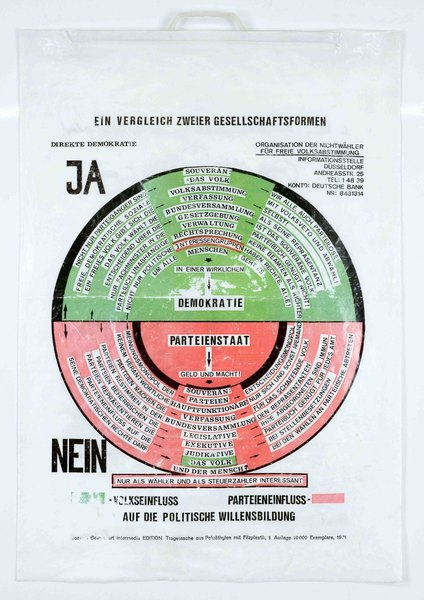
CRVI000799Joseph Beuys - Ein Vergleich zweier Gesellschaftsformen
Polythene carrier bag with felt · art intermedia Edition · 10,000 copies · 1971
Polythene carrier bag with felt · art intermedia Edition · 10,000 copies · 1971
CRVI000166Soft Machine - Seven
Designed by Roslav Szaybo · CBS 65799 · 1973
Designed by Roslav Szaybo · CBS 65799 · 1973

CRVI000394Grace Jones - Portfolio
Designer unknown · Island Records · 1977
Designer unknown · Island Records · 1977

CRVI000377Alvin Lucier - Bird And Person Dyning
Designer unknown · Cramps · 1976
Designer unknown · Cramps · 1976
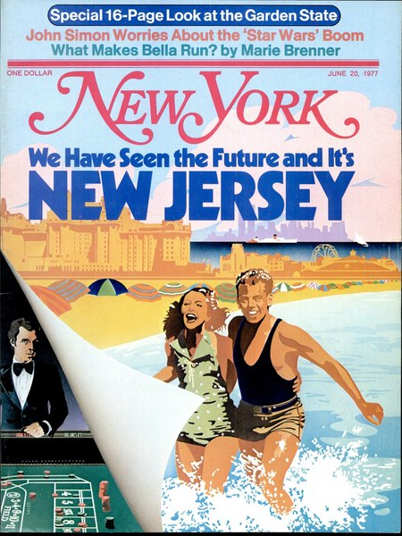
CRVI000598Unknown - We Have Seen the Future and It's New Jersey
New York, June 20, 1977 · 1977
New York, June 20, 1977 · 1977

CRVI000388Manuel Göttsching - Inventions For Electric Guitar (Mixed Tracks)
Designer unknown · Kosmische Musik · 1975
Designer unknown · Kosmische Musik · 1975
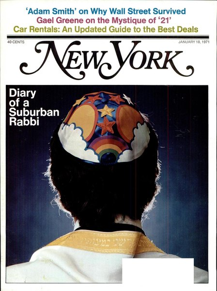
CRVI000590Unknown - Diary of a Suburban Rabbi
New York, January 18, 1971 · 1971
New York, January 18, 1971 · 1971
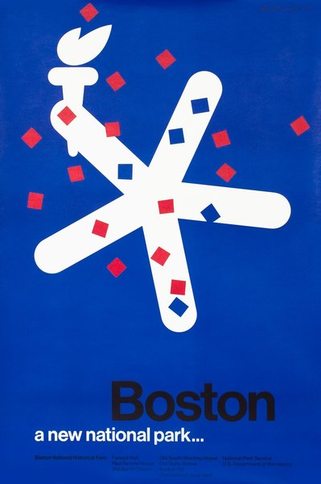
CRVI000778Paul Rand - Boston: A New National Park
National Park Service · 1975
National Park Service · 1975

CRVI000395Herbie Mann - Bird In A Silver Cage
Designer unknown · Atlantic · 1976
Designer unknown · Atlantic · 1976
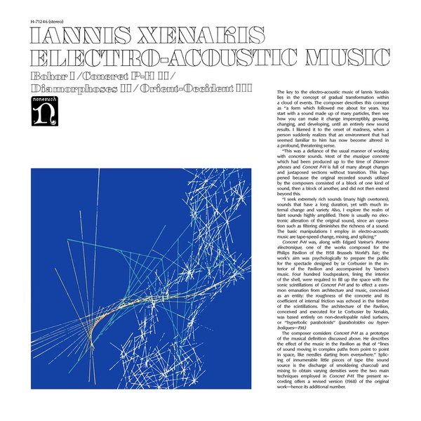
CRVI000022Iannis Xenakis - Electro-Acoustic Music
Designed by Iannis Xenakis, Paula Bisacca · Nonesuch · 1970
Designed by Iannis Xenakis, Paula Bisacca · Nonesuch · 1970
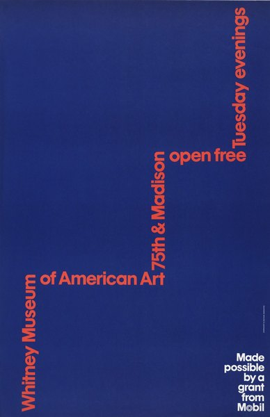
CRVI000613Ivan Chermayeff, Thomas Geismar - Whitney Museum of American Art, 75th & Madison, Open Free Tuesday Evenings
Lithograph, 116.8 × 76.1 cm · 1977
Lithograph, 116.8 × 76.1 cm · 1977

CRVI000258Maciej Zbikowski - The Man Whose Price Rose
Film Poster Designed By Maciej Zbikowski · 1973 · 1973
Film Poster Designed By Maciej Zbikowski · 1973 · 1973
CRVI000297King Tubby - The Roots Of Dub
Designer unknown · Total Sounds / Clock Tower Records Inc. · 1976
Designer unknown · Total Sounds / Clock Tower Records Inc. · 1976
CRVI000175Third Ear Band - Third Ear Band
Designer unknown · Harvest SHVL773 · 1970
Designer unknown · Harvest SHVL773 · 1970

CRVI000075H. Tical - Impact Synthesized Sound And Music
Designer unknown · Vedette Records · 1971
Designer unknown · Vedette Records · 1971

CRVI000356The Bar-Kays - Money Talks
Designer unknown · Stax · 1978
Designer unknown · Stax · 1978

CRVI000357The Meters - Rejuvenation
Designer unknown · Reprise · 1974
Designer unknown · Reprise · 1974

CRVI000127Koichi Sato - Sakurahime Azuma Bunsho
桜姫東文章 · Shinjuku Kinokuniya Hall · 1976 Tomin Arts Festival · 1976
桜姫東文章 · Shinjuku Kinokuniya Hall · 1976 Tomin Arts Festival · 1976

CRVI000396James White & The Blacks - Off White
Designer unknown · 1979
Designer unknown · 1979

CRVI000354Wah Wah Watson - Elementary
Designer unknown · Columbia · 1976
Designer unknown · Columbia · 1976

CRVI000157Kazumasa Nagai - Exhibition of Graphic Art
Designed by Kazumasa Nagai · 1978
Designed by Kazumasa Nagai · 1978

CRVI000346The J.B.'s - Food For Thought
Designer unknown · People · 1972
Designer unknown · People · 1972
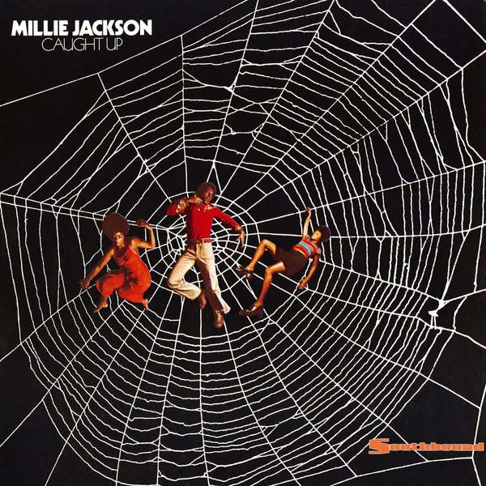
CRVI000362Millie Jackson - Caught Up
Designer unknown · Spring · 1974
Designer unknown · Spring · 1974
CRVI000060Tito - Quetzalcóatl
Designed by Tito, Manuel Fornos · Discos Tiabi · 1977
Designed by Tito, Manuel Fornos · Discos Tiabi · 1977
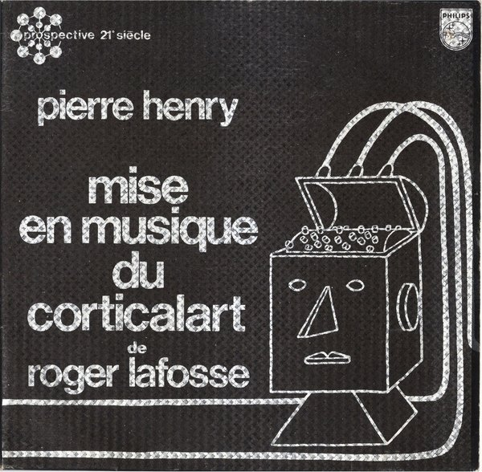
CRVI000070Pierre Henry - Mise En Musique Du Corticalart De Roger Lafosse
Designer unknown · Philips · 1971
Designer unknown · Philips · 1971
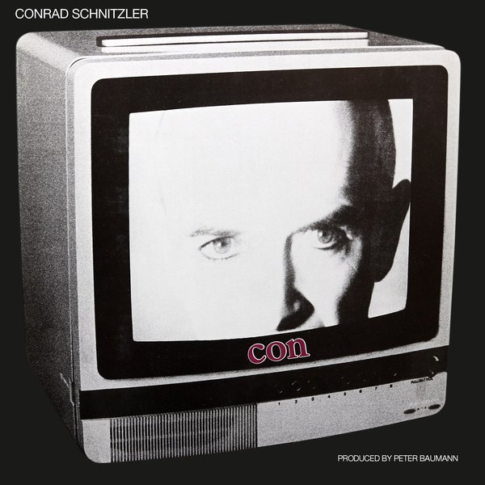
CRVI000386Conrad Schnitzler - Con
Designer unknown · Egg · 1978
Designer unknown · Egg · 1978
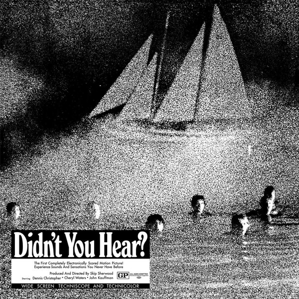
CRVI000081Mort Garson - Didn’t You Hear?
Designer unknown · Custom Fidelity · 1970
Designer unknown · Custom Fidelity · 1970

CRVI000866Julian Stanczak - Solar
Oil on plastic · 91.4 × 91.4 cm · 1972
Oil on plastic · 91.4 × 91.4 cm · 1972
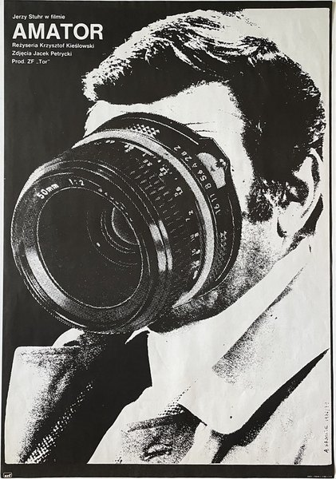
CRVI000273Andrzej Krauze - Camera Buff
Film Poster · 1979 · 1979
Film Poster · 1979 · 1979

CRVI000134Shigeo Fukuda - Shigeo Fukuda
Exhibition, Keio Department Store SF Art Gallery, 23–28 May 1975 · 1975
Exhibition, Keio Department Store SF Art Gallery, 23–28 May 1975 · 1975

CRVI000255Romuald Socha - A Faithful Woman
Film Poster Designed By Romuald Socha · 1978 · 1978
Film Poster Designed By Romuald Socha · 1978 · 1978
CRVI001010BIT, Inc. - BIT
Trademark · Installation and Repair Services for Computers · Natick, Massachusetts · designer unknown · 1971
Trademark · Installation and Repair Services for Computers · Natick, Massachusetts · designer unknown · 1971

CRVI000450Derek Birdsall - Social Science and Public Policy
Cover for Martin Rein · Penguin Education · 1972
Cover for Martin Rein · Penguin Education · 1972

CRVI001013Huntington Mechanical Laboratories, Inc. - H
Trademark · Construction Services · Mountain View, California · designer unknown · 1974
Trademark · Construction Services · Mountain View, California · designer unknown · 1974
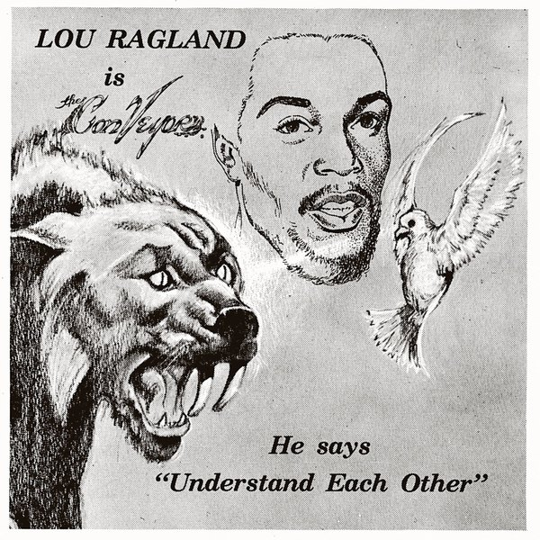
CRVI000427Lou Ragland - Is The Conveyor "Understand Each Other®
Designer unknown · SMH Records · 1978
Designer unknown · SMH Records · 1978
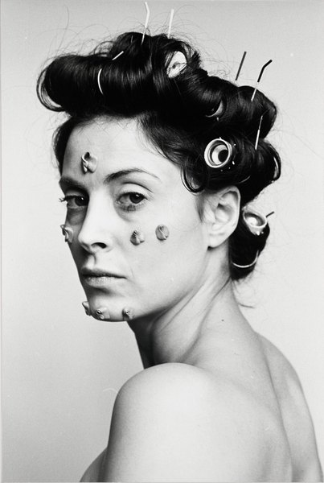
CRVI000795Hannah Wilke - S.O.S. Starification Object Series (Curlers)
Gelatin silver print · 101.6 × 68.6 cm · 1974
Gelatin silver print · 101.6 × 68.6 cm · 1974

CRVI000802Joseph Beuys - Filzanzug
Felt Suit · edition of 100 · 1970
Felt Suit · edition of 100 · 1970

CRVI001008Motown Records Corp. - The Supremes
Trademark · Entertainment Services · Detroit, Michigan · designer unknown · 1974
Trademark · Entertainment Services · Detroit, Michigan · designer unknown · 1974

CRVI000447Derek Birdsall - Ideology
Cover for L. B. Brown · Penguin Education · 1972
Cover for L. B. Brown · Penguin Education · 1972

CRVI000449Derek Birdsall - Peasants and Peasant Societies
Cover for Teodor Shanin · Penguin Education · 1972
Cover for Teodor Shanin · Penguin Education · 1972
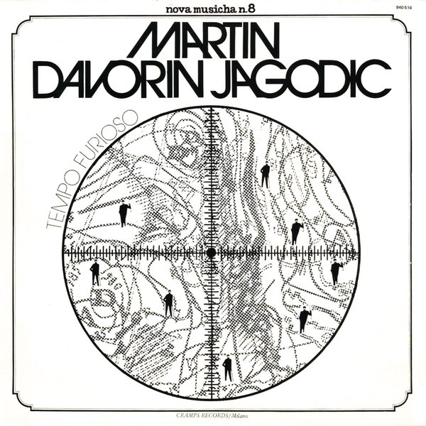
CRVI000095Martin Davorin Jagodic - Tempo Furioso (Tolles Wetter)
Designer unknown · nova musicha - n. · 1975
Designer unknown · nova musicha - n. · 1975

CRVI001001Community Church of Religious Science - Your world is Your reflection of Your understanding
Trademark · Religious Educational Books · Los Angeles, California · designer unknown · 1974
Trademark · Religious Educational Books · Los Angeles, California · designer unknown · 1974

CRVI000451Derek Birdsall - Creativity
Cover for P. E. Vernon · Penguin Education · 1972
Cover for P. E. Vernon · Penguin Education · 1972

CRVI000077Fluence - Fluence
Designer unknown · Pôle Records · 1975
Designer unknown · Pôle Records · 1975